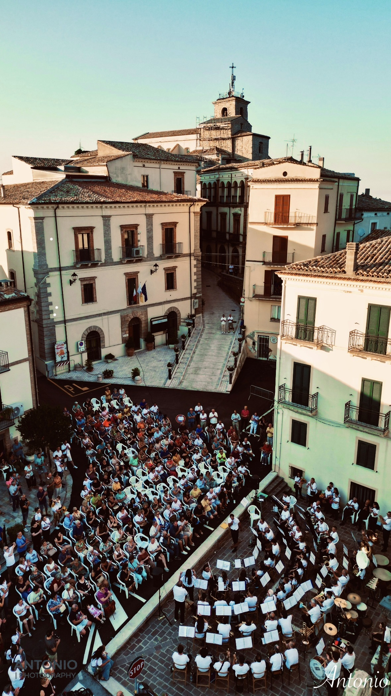
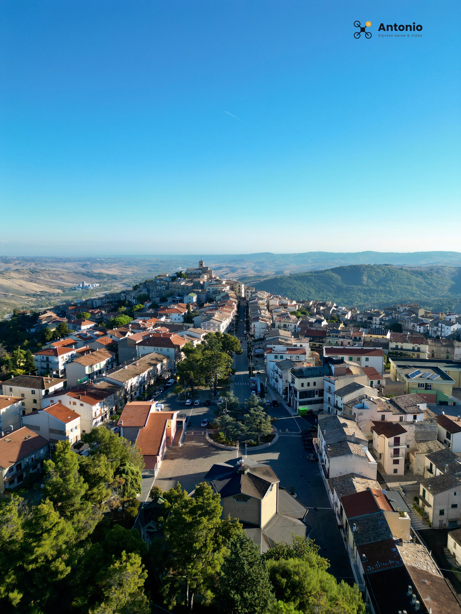

In questa sezione raccolgo i miei scatti e video meglio riusciti, realizzati tutti con un DJI Mini 3 Pro. Il mio obiettivo è puntare alla valorizzazione del territorio attraverso una prospettiva diversa.

Banda Gissi
Gissi · Evento

Macchina Porto
Porto di Vasto · Foto
Gissi
Gissi Vecchia · Tramonto invernale
00:25
Corso di Gissi
Gissi · Video
00:28
Rettilineo Porto
Porto di Vasto · Tramonto
00:39
Gissi tra le nuvole
Gissi · Video
00:09
Nave in mare
Mare · Video
00:38
Presentazione Santalù
Santalù · Video
00:44
Man Stewart Santalù
Santalù · Video
00:21
DanteB Santalù
Santalù · Video
00:20
Raduno auto e moto d'epoca
Evento · Video

Gissi paese
Gissi · Foto
Ti serve uno scatto o una ripresa?
Foto e riprese aeree con drone. Scrivimi per richiedere un lavoro.
Contattami© 2026 | Antonio Costantino